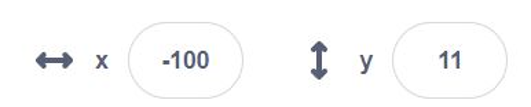

|
角色的座標值（X Position & Y Position） |
|---|

在Scratch中，每個角色都會以其「造型中心」位置的（x 值）和（y 值）為座標值，用（ｘ,ｙ）來表示。可以透過該角色造型的圖像編輯器去調整其中心位置。
在概念的理解上要注意：
❶座標值包括兩個，一個是水平座標值，另一個是垂直座標值。計算時可以先確定水平座標值，再確定垂直座標值，最後把兩個放在一起就行了。
❷數字的正負代表方向，值代表距離。座標值數字越大，代表距離舞臺中央（原點）越遠。如果是負數（數字前面有一道小橫杠，如-100），就說明他和正數（如100）的方向是相反的。他們分別位於原點的兩側，而它倆到原點的距離是一樣的。
❸角色的座標值在編輯模式下，會顯示在舞臺下方角色編輯區的屬性欄位上，如圖所示。你就可以透過移動角色來獲取角色的座標值。
❹在編程中若要偵測與角色的距離時，就是以角色的座標值來計算，但若是要偵測與角色的碰撞時，則是以角色造型的範圍來偵測判斷。
❺當角色的座標值沒有落在舞臺的顯示範圍中時，該角色就不會被看到，但它還是存在的。